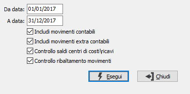

Controllo quadratura contabilità analitica
Il programma consente di effettuare una serie di controlli di congruità sui movimenti di contabilità analitica, sui movimenti contabili e sui saldi.

La procedura richiede il periodo da controllare, che deve rientrare in un unico esercizio e consente tramite le caselle di spunta di effettuare diversi controlli:
INCLUDI MOVIMENTI CONTABILI: definisce se controllare la coerenza dei movimenti di analitica derivanti dalla contabilità e ne controlla anche la coerenze di importi fra testa e righe.
INCLUDI MOVIMENTI EXTRA CONTABILI: definisce se controllare la coerenza di importi fra testa e righe dei movimenti di analitica non derivanti dalla contabilità.
CONTROLLO SALDI CENTRI DI COSTI/RICAVI: definisce se controllare la coerenza dei saldi dei centri di costo/ricavo con i movimenti di analitica.
CONTROLLO RIBALTAMENTO MOVIMENTI: definisce se controllare i movimenti che sono stati o saranno oggetto di ribaltamento.